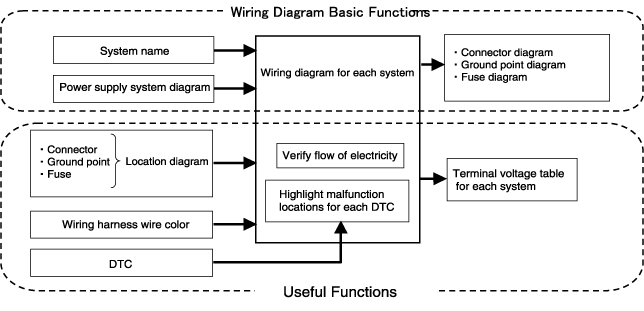

CJJ010000000U01
ผังวงจรไฟฟ้าแบบดิจิตอลนี้ได้รับการพัฒนามาเพื่อใช้ในพื้นที่การให้บริการโดยตรง ซึ่งมีฟังก์ชั่นต่างๆ ที่เพิ่มความสามารถในการโต้ตอบการสื่อสารระหว่างกันได้สูงสุดเพื่อให้มั่นใจว่างานซ่อมสามารถดำเนินการได้อย่างรวดเร็วและถูกต้อง
คุณสมบัติพิเศษ
1. สีสายไฟจะแสดงเป็นสีจริง
2. ภาพเคลื่อนไหวของเส้นทางหลักในการไหลของกระแสไฟฟ้า
3. จอแสดงผลระบุชิ้นส่วนที่เกี่ยวข้องสำหรับแต่ละรหัสวิเคราะห์ปัญหา
4. ฟังก์ชั่นค้นหาขั้นสูง
•ค้นหาผังวงจรไฟฟ้าจากแผนผังตำแหน่งขั้วต่อ / จุดต่อลงกราวด์ / ฟิวส์
•ค้นหาผังวงจรไฟฟ้าจากสีชุดสายไฟ
•ค้นหาผังวงจรไฟฟ้าจากชื่อชิ้นส่วน
ภาพรวมของฟังก์ชั่นผังวงจรไฟฟ้า
